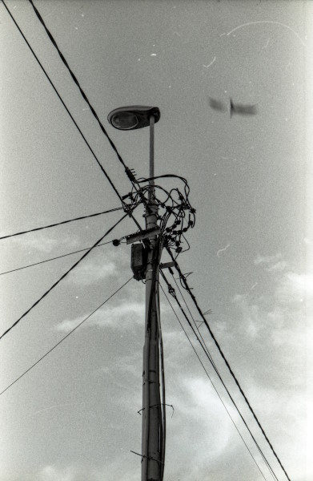
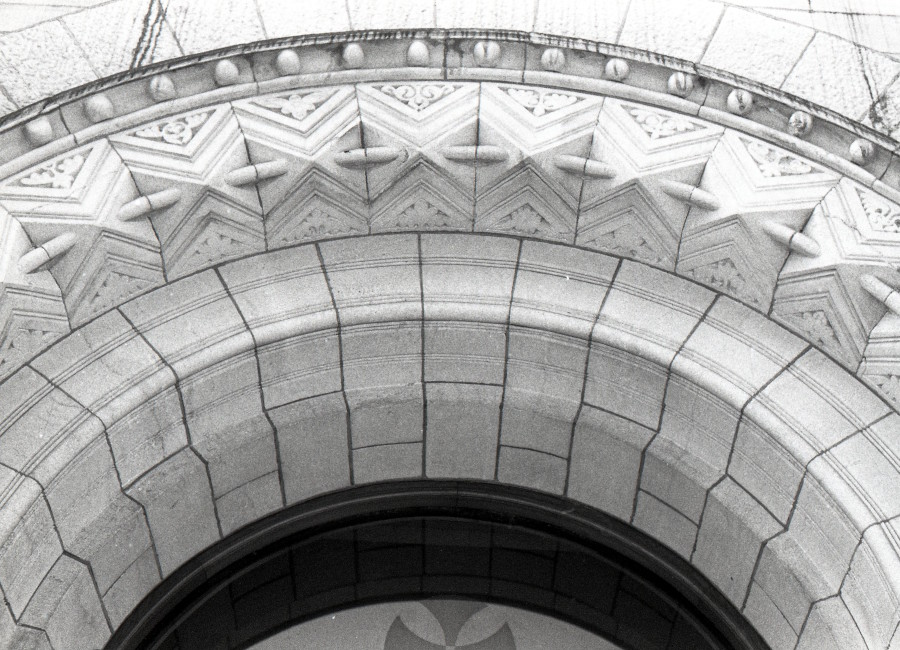
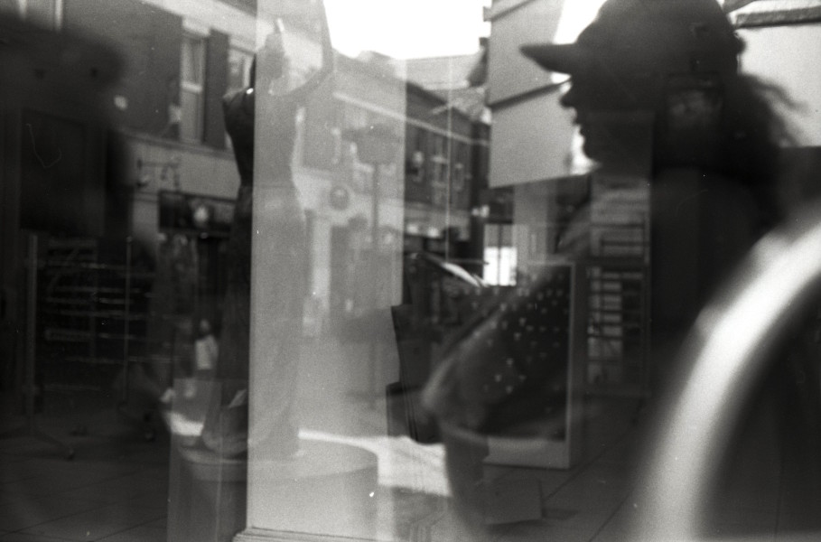
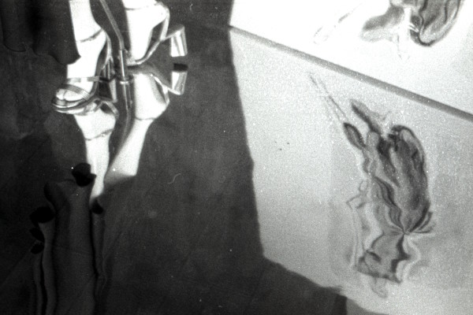
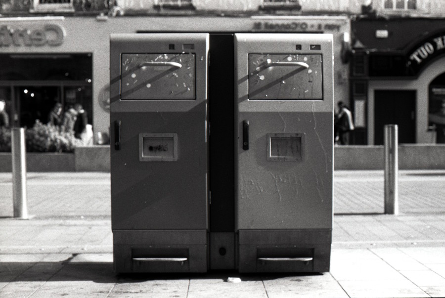
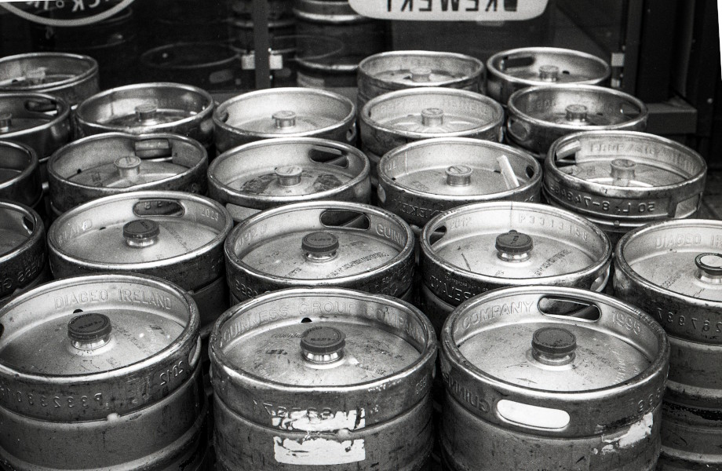
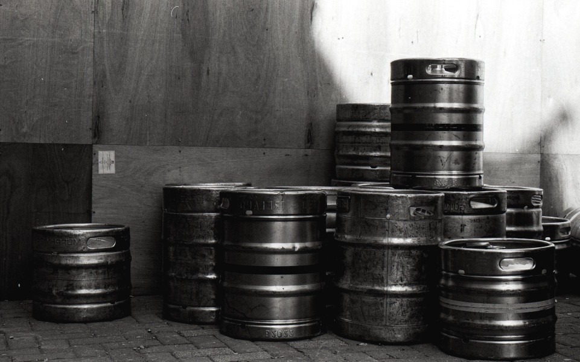
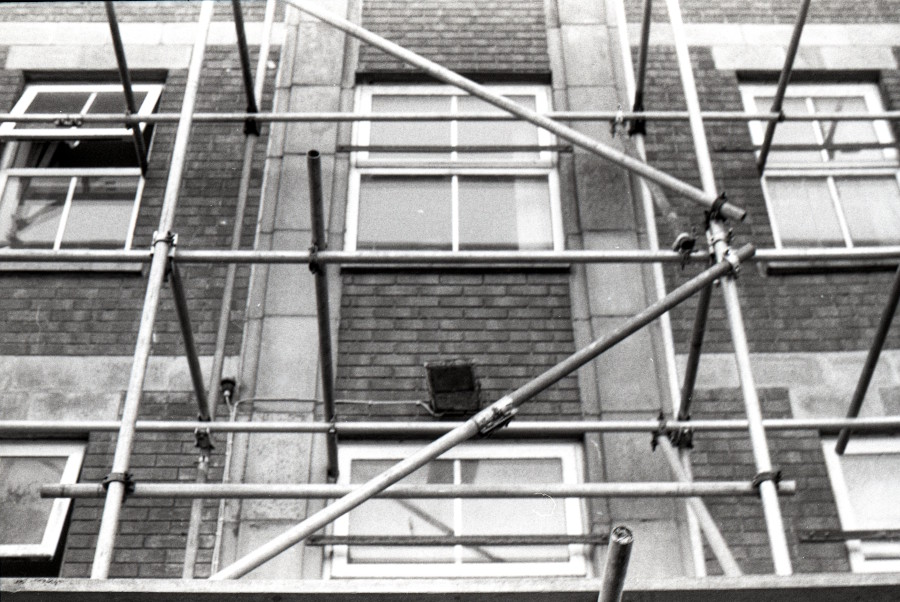
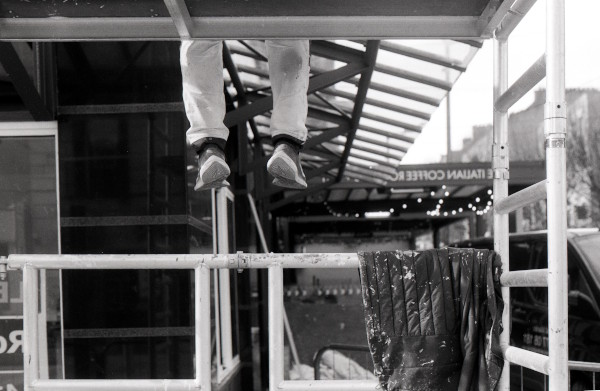

Monumental
Монументальне
This series is an attempt to capture the beauty, the fleeting moments, and the fragility
hidden within the monotony of the city's monumentality. The urban landscape often feels
overwhelming — concrete, glass, repetition. But within that rhythm, there are pockets of
tenderness: light touching a wall, a shadow shifting, a detail that escapes the hurried eye.
Using black-and-white film, I slow down. The grain, the texture, the contrast — they bring
warmth to the cold geometry of the city. This is not architecture as spectacle. This is
architecture as witness. A quiet observation of how the monumental becomes intimate, how
the permanent reveals its fragile side.
Series
Серія










Artist Statement
Художнє висловлювання
The city is never silent. It speaks through lines, shadows, and the weight of its structures.
But in its noise, there are moments of quiet — a sliver of light across a concrete wall,
the texture of a weathered surface, the stillness of a corner forgotten by time.
Monumental is a study of these moments. Shot on black-and-white film, the series moves
through Limerick's urban landscape, searching for fragility in the rigid, intimacy in the
overwhelming. The grain of the film softens the sharp edges of architecture. The contrasts
bring out details that are usually overlooked.
This work is not about documenting buildings. It is about feeling them. It is about noticing
the tenderness that exists even in the most monumental spaces — the way light falls, the way
shadows stretch, the way concrete can hold a moment if we are still enough to see it.